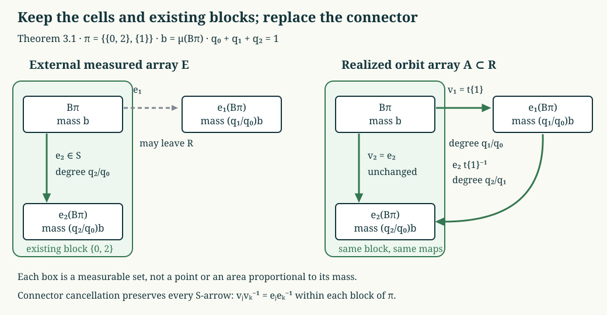

Generating weighted arrays and groupoid isomorphisms
Finite weighted arrays become coordinates for a measured relation only when they recover both its arrows and its measurable sets. We construct arrays with these two properties. The main device is a finite realization lemma: a measured array whose maps may leave the relation can be replaced by orbit maps while retaining every already valid subrelation and every cell.
Let \(R\) be a countable standard Borel equivalence relation on a nonatomic probability space \((X,\mu)\). Its measure is nonsingular, and its modulus uses the range-over-source convention
\[ \mu(TA)=\int_A\delta(Tx,x)\,d\mu(x). \tag{GWA.1} \]Assume that \(\delta\) takes values in a countable group \(H\subset\mathbb R_+^\times\), that \(R_0=\ker\delta\) is ergodic, and that every \(h\in H\) occurs on a positive-domain partial orbit map. Thus \(H\) is the actual degree group, not just a group containing the derivative values.
The countable partial graphs and null-saturation conventions are 2. Countable presentations and null saturation. The essential input is the proved homogeneous matching theorem, 3. Exact matching from an ergodic kernel: sets \(A,B\) with \(\mu(B)=h\mu(A)\), \(h\in H\), admit an onto partial orbit bijection of constant derivative \(h\). It holds inside every positive reduction, with normalized measure. All statements below are modulo null sets, with Borel representatives chosen simultaneously.
Fix \(d\ge2\) and strictly positive probabilities \(p_0,\ldots,p_{d-1}\) such that
\[ \sum_i p_i=1,\qquad H=\langle p_i/p_0:0\le i<d\rangle. \tag{GWA.2} \]For a word \(u\) of length \(n\), put \(p(u)=\prod_{k=1}^n p_{u_k}\). A \(p\)-array of order \(n\) has cells \(A_u\) of masses \(p(u)\) and matrix maps \(U_{uv}:A_v\to A_u\) of degree \(p(u)/p(v)\). Its maps satisfy \(U_{uv}U_{vw}=U_{uw}\), \(U_{uu}=\mathrm{id}\), and form a finite subrelation.
1. Atomless coordinates and finite weighted patterns
We will use measure-preserving isomorphisms between nonatomic standard probability spaces, without requiring those isomorphisms to preserve any relation. Here is the measure-space construction.
A countable separating Borel family gives an injective Borel map \(j:X\to[0,1]\). Its Borel image and inverse are supplied by the precise injective-image theorem recorded in 1. Objects and the existing symmetry proofs. Let \(\nu=j_*\mu\), and let \(F(t)=\nu([0,t])\). Nonatomicity makes \(F\) continuous. For \(0<u<1\), put
\[ Q(u)=\inf\{t\in[0,1]:F(t)\ge u\}. \tag{GWA.3} \]Continuity gives \(F(Q(u))=u\). Also \(Q(u)\le t\) exactly when \(u\le F(t)\), so \(Q\) sends Lebesgue probability to \(\nu\). Consequently \(F\) sends \(\nu\) to Lebesgue probability, and \(Q(F(t))=t\) for \(\nu\)-almost every \(t\): apply \(QFQ=Q\) to a uniform variable. Moreover \(Q(u)\in j(X)\) almost everywhere. On the conull sets where these identities hold, \(Fj\) and \(j^{-1}Q\) are inverse measure-preserving Borel maps. Composing two such models gives the required isomorphism. Applying the construction to normalized positive subsets also allows their division into countably many prescribed masses whose sum is their total mass.
Let \(F_0\subset R\) be any full-unit finite Borel subrelation; there need be no uniform bound on its class sizes. Choose a Borel injection \(j\) as above and order each finite class by \(j\). The countable graph presentation makes this finite ordering measurable: being its first point means that no enumerated graph gives a smaller point, and subsequent points are selected by the same countable comparisons. The class size and its ordered points are Borel.
Write an ordered class as
\[ t_0(b)=b,\ t_1(b),\ldots,t_{r-1}(b), \]with \(b\) its first point. Partition the transversal further by the tuple
\[ (r,h_0,\ldots,h_{r-1}),\qquad h_j=\delta(t_j(b),b),\quad h_0=1. \tag{GWA.4} \]There are countably many such tuples because \(H\) is countable. We obtain disjoint towers with base \(B_t\), sheets \(t_j(B_t)\), and constant derivatives \(h_{t,j}\). If \(b_t=\mu(B_t)\), then
\[ \mu(t_j(B_t))=h_{t,j}b_t,\qquad \sum_t\sum_{j<r_t}h_{t,j}b_t=1. \tag{GWA.5} \]Discard null bases and their finitely or countably many sheets. This is a decomposition by actual class sizes and degrees; no boundedness of those degrees is asserted.
2. Copying a finite pattern into the Bernoulli relation
Let
\[ (Y,\nu)=\left(\{0,\ldots,d-1\}^{\mathbb N},\bigotimes_{k\ge1}p\right), \]and let \(T\) be eventual equality. The product measure, cylinder approximation and prefix derivatives are proved in 2. A dense ratio range with a nonergodic discrete extension. The finite-permutation proof in 5. Bernoulli kernels and their actual degree group proves that \(\ker\delta_T\) is ergodic and that its actual degree group is exactly (GWA.2). Thus HGA-03 applies to \(T\), independently of any classification theorem. The space is nonatomic: every length-\(n\) cylinder has mass at most \((\max_i p_i)^n\), which tends to zero.
Lemma 2.1 (finite-pattern copy). Given \(F_0\subset R\) as in Section 1, there is a measure-preserving Borel isomorphism \(\Phi:(X,\mu)\to(Y,\nu)\) such that
\[ \Phi F_0\Phi^{-1}\subset T. \tag{GWA.6} \]Proof. Use the tower decomposition (GWA.4). Partition \(Y\) into sets \(C_{t,j}\) of masses \(h_{t,j}b_t\); Section 1 and (GWA.5) permit this countable partition. Homogeneous matching in \(T\) gives
\[ v_{t,j}:C_{t,0}\longrightarrow C_{t,j}, \qquad \deg v_{t,j}=h_{t,j},\qquad v_{t,0}=\mathrm{id}. \tag{GWA.7} \]Choose a measure-preserving isomorphism \(\phi_t:B_t\to C_{t,0}\) using Section 1 and define
\[ \Phi(t_jb)=v_{t,j}\phi_t(b). \tag{GWA.8} \]The sheets partition \(X\) and \(Y\), so this is a Borel isomorphism on conull subsets. On a measurable subset \(A\subset B_t\), both its source sheet \(t_j(A)\) and its image have measure \(h_{t,j}\mu(A)\). Countable additivity therefore proves that \(\Phi\) preserves measure. Points in each \(F_0\)-class map into one \(T\)-class, by (GWA.7). This proves (GWA.6). \(\square\)
This copies one finite relation only. It neither assumes nor proves that \(\Phi R\Phi^{-1}=T\). When pulling back prefix maps, first restrict to the preimage of a \(T\)-invariant conull subset of the image of \(\Phi\). Any subsequent countable list of null exceptions can be removed together with its closure under the original relation maps and these nonsingular pulled-back maps. The resulting restriction is still conull and supports all the required arrays.
3. Realizing a measured array by orbit maps
An external measured array consists of a partition \(A_0,\ldots,A_{N-1}\) and nonsingular Borel bijections \(e_i:A_0\to A_i\), with \(e_0=\mathrm{id}\) and constant degrees \(q_i/q_0\), where \(\mu(A_i)=q_i>0\). Its matrix maps are \(e_i e_j^{-1}\). Their graphs need not belong to \(R\); denote their finite equivalence relation by \(E\).
Theorem 3.1 (relative realization). Suppose \(q_i/q_0\in H\) for all \(i\), and \(S\subset E\cap R\) is a full-unit Borel subrelation. There is a full array \(A\subset R\) with the same cells \(A_i\), the same degrees, and
\[ S\subset A. \tag{GWA.9} \]Proof. For \(b\in A_0\), record the partition \(\pi(b)\) of \(\{0,\ldots,N-1\}\) defined by
\[ i\sim_{\pi(b)}j \quad\Longleftrightarrow\quad (e_i b,e_j b)\in S. \tag{GWA.10} \]There are finitely many possible partitions. Their Borel base pieces \(B_\pi\) partition \(A_0\). Pieces of zero measure can be discarded with all their finitely many sheets.
Fix \(\pi\). For each block \(I\) choose a representative \(i_I\), choosing \(i_I=0\) for the block containing zero. The sets \(e_{i_I}(B_\pi)\) have measure \((q_{i_I}/q_0)\mu(B_\pi)\). HGA-03 gives orbit maps
\[ t_I:B_\pi\longrightarrow e_{i_I}(B_\pi), \qquad \deg t_I=q_{i_I}/q_0; \tag{GWA.11} \]for the zero block take \(t_I=\mathrm{id}\). For \(j\in I\), define
\[ v_j=e_j e_{i_I}^{-1}t_I :B_\pi\longrightarrow e_j(B_\pi). \tag{GWA.12} \]The first part \(e_j e_{i_I}^{-1}\), on this domain, has graph in \(S\) by (GWA.10). Thus \(v_j\) is an orbit map, of degree \(q_j/q_0\). In particular \(v_0=\mathrm{id}\).
Join these definitions over the finitely many \(\pi\). The maps \(v_j:A_0\to A_j\) give the required array \(v_jv_k^{-1}\subset R\). If \(j,k\) lie in the same block of \(\pi\), the chosen connector cancels:
\[ v_jv_k^{-1} =e_j e_{i_I}^{-1}t_I t_I^{-1}e_{i_I}e_k^{-1} =e_j e_k^{-1} \quad\hbox{on }e_k(B_\pi). \tag{GWA.13} \]Every \(S\)-arrow has this form. Hence all of \(S\) is retained, and no cell has moved. \(\square\)

The diagram shows (GWA.11)–(GWA.13) for \(\pi=\{\{0,2\},\{1\}\}\). The already valid map \(e_2\) is retained; \(t_{\{1\}}\) replaces the external connector \(e_1\). All three boxes have the exact masses shown. The resulting map from sheet 1 to sheet 2 is \(e_2t_{\{1\}}^{-1}\), with degree \(q_2/q_1\).
The external array is a substantive hypothesis. Arbitrary compatible partial matchings do not always extend to a full array with fixed cells; Exercise 1 gives an obstruction.
4. Simultaneous approximation of arrows and sets
Theorem 4.1 (finite approximation by prescribed weights). Let \(F_0\subset R\) be finite, let \(D_1,\ldots,D_s\subset X\) be measurable, and let \(\varepsilon>0\). There is a \(p\)-array \(A\subset R\) of some order \(n\), with cells \(A_u\), such that
\[ \mu\{x:[x]_{F_0}\not\subset[x]_A\}<\varepsilon, \tag{GWA.14} \]and each \(D_j\) is within \(\varepsilon\) in measure of a union of the cells \(A_u\).
Proof. Take \(\Phi\) from Lemma 2.1. Let \(E_n^Y\) be the finite prefix relation on \(Y\): two sequences agree in every coordinate after \(n\). Its cells are the length-\(n\) cylinders, and its prefix-replacement maps have degrees \(p(u)/p(v)\). Pull this full measured array back by the measure-preserving isomorphism \(\Phi\), obtaining an external array \(E_n\) on \(X\).
The finite relations \(E_n\) increase, and their union contains \(F_0\), by (GWA.6). For almost every \(x\), the finitely many points of \([x]_{F_0}\) therefore all belong to \([x]_{E_n}\) for sufficiently large \(n\). The bad sets in (GWA.14), with \(E_n\) in place of \(A\), decrease to a null set. Continuity of probability from above makes their measures tend to zero. This uses finiteness of each individual class, not a uniform class-size bound.
The sets \(\Phi(D_j)\) are approximable in measure by finite unions of cylinders, as proved in HGA-02. Increase \(n\) to meet all the arrow and set error bounds simultaneously. Apply Theorem 3.1 with
\[ E=E_n,\qquad S=E_n\cap F_0. \tag{GWA.15} \]The resulting orbit array \(A\) has exactly the pulled-back cylinder cells. Thus the set approximations survive unchanged. At every point where the entire \(F_0\)-class already lay in the \(E_n\)-class, all its arrows belong to \(S\subset A\), proving (GWA.14). \(\square\)
Hyperfiniteness of \(R\) was not used in this theorem. It will be used to refine an old array while controlling additional arrows.
5. Exact refinement with additional approximation
Assume now that \(R\) is hyperfinite in the sense of 1. What finite approximation means: on an invariant conull set it has an increasing full-unit finite exhaustion.
Theorem 5.1. Suppose \(A^{\mathrm{old}}\) is a \(p\)-array of order \(k\). Given finite \(F_0\subset R\), measurable \(D_1,\ldots,D_s\) and \(\varepsilon>0\), there is a \(p\)-array \(A^{\mathrm{new}}\) of order \(k+\ell\), \(\ell\ge1\), which refines the old cells and maps exactly, satisfies (GWA.14), and approximates every \(D_j\) by cell unions to within \(\varepsilon\).
Proof. Index the old cells by words \(v\) of length \(k\), set \(q_v=p(v)\), choose a base word \(o\), and write
\[ B=A_o^{\mathrm{old}},\qquad a_v=U_{vo}^{\mathrm{old}}:B\to A_v^{\mathrm{old}}, \qquad \deg a_v=q_v/q_o. \tag{GWA.16} \]The restriction \(R|_B\), with probability \(\mu_B=\mu|_B/q_o\), still has ergodic modulus kernel and actual degree group \(H\), by HGA-03. If \(K_m\uparrow R\) is finite, then \(L_m=K_m\cap(B\times B)\) is a finite exhaustion of \(R|_B\).
For \(x\in A_v^{\mathrm{old}}\) and \(y\in[x]_{F_0}\cap A_u^{\mathrm{old}}\), the projected pair
\[ (a_u^{-1}y,a_v^{-1}x) \tag{GWA.17} \]belongs to \(R|_B\). For almost every \(x\), there are only finitely many such \(y\); all these pairs eventually belong to one \(L_m\). By continuity from above choose \(m\) such that the set of \(x\) for which at least one pair (GWA.17) is missing has \(\mu\)-measure less than \(\varepsilon/2\). Measurability follows by enumerating the partial graphs of \(F_0\). This argument does not assume that the relation generated by \(F_0\) and the old array is finite.
Apply Theorem 4.1 in \(B\) to \(L_m\) and to the finitely many sets
\[ a_v^{-1}(D_j\cap A_v^{\mathrm{old}}),\qquad v,\ j. \tag{GWA.18} \]Choose its class error less than \(\varepsilon/2\) and each set error less than \(\varepsilon\), all measured by \(\mu_B\). Its order may be increased before realization, so take \(\ell\ge1\). Denote the resulting base array by \(V\), with cells \(C_w\) and maps \(V_{wz}\).
Extend the old array exactly as in 5. Refinement without changing earlier maps:
\[ A_{v,w}^{\mathrm{new}}=a_v(C_w),\qquad U^{\mathrm{new}}_{(u,w),(v,z)}=a_u V_{wz}a_v^{-1}. \tag{GWA.19} \]Their masses are \(q_vp(w)\), their degrees are \(q_up(w)/(q_vp(z))\), and equal new indices restrict the old maps.
Let \(N\subset B\) be the base set where the whole \(L_m\)-class is not in the \(V\)-class. Its lifts have total mass
\[ \sum_v\mu(a_vN)=\sum_v q_v\mu_B(N)=\mu_B(N)<\varepsilon/2. \tag{GWA.20} \]Outside these lifts and the exceptional set chosen for (GWA.17), every point of \([x]_{F_0}\) is reached by (GWA.19). This proves (GWA.14). For each \(D_j\), choose the base cell unions approximating (GWA.18), lift them separately in every old cell, and take their union. Their errors sum to less than \(\sum_v q_v\varepsilon=\varepsilon\). \(\square\)
6. Constructing the generating arrays
Theorem 6.1 (weighted exhaustion). Under the standing hypotheses and hyperfiniteness, there is a sequence of exactly refining \(p\)-arrays \(A_n\), of orders \(k_n\uparrow\infty\), such that, on an invariant conull set,
\[ R=\bigcup_n A_n, \tag{GWA.21} \]and their cells generate the completed measurable sigma-algebra.
Proof. Fix an increasing finite exhaustion \(F_n\uparrow R\), and a countable Borel separating family \(D_1,D_2,\ldots\) that generates the Borel sigma-algebra. Begin with the one-cell order-zero array. At stage \(n\), use Theorem 5.1 to refine the preceding array, control the entire \(F_n\)-class outside a set of measure \(2^{-n}\), and approximate each of \(D_1,\ldots,D_n\) by new cell unions with error less than \(2^{-n}\).
Fix \(j\). For \(n\ge j\), the set
\[ B_{j,n}=\{x:[x]_{F_j}\not\subset[x]_{A_n}\} \]has measure less than \(2^{-n}\), because \(F_j\subset F_n\). It decreases as \(n\) increases, since the array relations increase. Thus its intersection is null. Outside that intersection every point's entire \(F_j\)-class lies in some \(A_n\)-class. Remove the union of these null sets over \(j\), and its \(R\)-saturation, using GMB-02. This proves (GWA.21) on an invariant conull set.
For each fixed \(D_j\), choose the cell union \(C_{j,n}\) supplied at stage \(n\ge j\). The error measures are summable. Explicitly,
\[ \mu\left(\bigcup_{n\ge N}(D_j\triangle C_{j,n})\right) \le\sum_{n\ge N}2^{-n}\longrightarrow0. \tag{GWA.22} \]Therefore \(\mathbf1_{C_{j,n}}\) eventually equals \(\mathbf1_{D_j}\) almost everywhere. The limit is measurable for the completed sigma-algebra generated by all array cells. It contains every \(D_j\), hence every measurable set modulo null sets. \(\square\)
Orders may skip integers. A stage of order \(k_{n+1}\) fills the intervening prefix levels by taking unions of cells with equal shorter prefixes and using the equal-suffix restrictions of its maps. The exact refinement identities make these intermediate arrays agree with all preceding stages. Their masses are the shorter word probabilities, since the suffix probabilities sum to one. Thus Theorem 6.1 supplies the arrays at every integer level required by the address construction.
7. The measured isomorphism and its exact scope
Theorem 7.1. Let \(R\) be a nonatomic hyperfinite countable standard Borel probability relation with \(H\)-valued modulus, ergodic modulus kernel, and actual degree group \(H\). For any finite probability vector satisfying (GWA.2), there is a measure-preserving Borel isomorphism, modulo null sets,
\[ (X,\mu,R)\ \cong\ \left(\{0,\ldots,d-1\}^{\mathbb N},\bigotimes_{n\ge1}p,T\right). \tag{GWA.23} \]Proof. Theorem 6.1 supplies both hypotheses of the complete address-map proof 6. When the arrays code the whole relation. Its map sends a point to its successive cell labels. Word masses give the product probability, generation of the sigma-algebra gives almost-everywhere injectivity, and exact arrow exhaustion gives both directions of eventual equality. The injective Borel image theorem supplies the Borel inverse, and the image is conull and invariant under all finite prefix changes. This is precisely (GWA.23). \(\square\)
In particular, two relations satisfying these hypotheses with the same finitely generated \(H\) are measure-preservingly isomorphic: choose a finite list \(h_1,\ldots,h_r\) generating \(H\) and use the probability vector proportional to \((1,h_1,\ldots,h_r)\). If \(H=\{1\}\), use \((1/2,1/2)\). Apply (GWA.23) to both relations and compose the two maps.
For the two-generator setting
\[ H=\langle\lambda_1,\lambda_2\rangle,\qquad p=\frac{(1,\lambda_1,\lambda_2)}{1+\lambda_1+\lambda_2}, \tag{GWA.24} \]this completes the compatible-array and generating-exhaustion step following Takesaki, Theory of Operator Algebras III, XVIII.4, Definition 4.26 and Lemma 4.27, p.398. Both weight parameters enter their respective degree ratios.
For an arbitrary type \(\mathrm{III}_1\) hyperfinite relation, applying this result still requires an equivalent finite measure whose modulus kernel is ergodic and whose actual degree group is the prescribed \(H\). Containment of derivative values in \(H\) is insufficient, as proved in 7. Two cyclic reductions with smaller degree groups. Theorem 7.1 does not silently supply this initial normalization.
8. Worked problems
Problem 1. Why does Theorem 3.1 require an external full array containing \(S\)? Consider three cells of equal measure, and a subrelation \(S\) all of whose classes have two points in distinct cells.
Solution. Such an \(S\) exists: split each cell into two equal halves and pair halves across the three unordered cell pairs. A full three-cell array containing \(S\) would partition each three-point class into two-point \(S\)-classes. That is impossible because three is odd. Thus correct pairwise masses and consistent partial matchings alone do not supply the external array. In Theorem 4.1 it is supplied explicitly by \(\Phi^{-1}E_n^Y\Phi\).
Problem 2. Why can the finite-pattern copy in Lemma 2.1 ignore the complexity of the ambient relation?
Solution. Its construction uses only each finite class's ordered derivative tuple. Countably many tuples give the towers (GWA.4); (GWA.5) fixes the masses of their copies. Homogeneous matching in the already explicit Bernoulli relation creates the copied tower maps. No map between different source towers is required, and no assertion about an isomorphism of the ambient relations is made.
Problem 3. Does the relation generated by an old finite array and a second finite relation have to be finite?
Solution. No. On the integers, pair \(2n\) with \(2n+1\) in one relation and \(2n-1\) with \(2n\) in the other. Both relations have two-point classes, while their union generates one infinite class. In a probability model, give every integer a strictly positive mass with finite total and normalize; both relations are nonsingular. The proof of Theorem 5.1 instead projects individual pairs to the old base and approximates them within a separately given hyperfinite exhaustion.
Problem 4. Where are the two exhaustion conditions proved, and what normalization remains?
Solution. The decreasing bad-class sets in Theorem 6.1 prove arrow exhaustion. The summable set-approximation errors in (GWA.22) prove sigma-algebra generation. Theorem 7.1 therefore applies whenever an ergodic modulus kernel and the exact actual degree group have already been obtained. For the unrestricted type \(\mathrm{III}_1\) classification, constructing that equivalent measure is still required.